Who am I?
To reiterate a little, I am a 16 year old college student majoring in Computer Science and I am currently just trying to keep learning more and becoming more confident in my skills as a programmer.
Playing games, making games, and designing software to solve problems, big or small; are my favourite ways to spend my time. But that doesn't mean my entire life revolves around my computer, with hobbyist photography being an excuse for me to go and explore the outside world for a little while.
Still in my first year of college, frankly there's not a lot to say about my life. But I guess that gives me a reason to go out there and do something cool :)
Why do I code?
Oftentimes it is easy for someone to get swayed by the incentives that come with a career in Computer Science and completely miss the joy it actually brings. I'm fortunate that it wasn't the same for me.
My love for programming started when I was still just a kid, filled with awe and curiosity about what it was that made these wondrous machines work. I admit, software is just a tiny part of what makes a computer tick; but the possibilities at my fingertips the moment I started experimenting with it dropped me down a rabbit hole of becoming enamoured by programming.
To me, it was just unbelievable that I could type on a keyboard and create something that didn't exist before, or solve a problem that I previously couldn't. And the euphoric joy of solving these, essentially grown-up puzzles, is ineffable.
What's my expertise?
I'm a fairly experienced programmer, with approximately 1200 hours spent coding across Web Development in HTML5-CSS3 as well as JavaScript/TypeScript; Games Development in Unity and C#; AI Engines in Python; and Software Development in Java; among other projects.
Don't think I didn't improve my soft-skills though, with extra-curricular trips and team exercises helping me improve my communication skills as well as adaptability; and having friendly coding competitions with my colleagues helping me sharpen my problem solving skills while also learning how to be more open to constructive criticism and also have a more creative outlook when approaching new problems. Finally, my work as a freelance developer particularly helped me learn how to effectively collaborate with others, as well as working within set deadlines.
